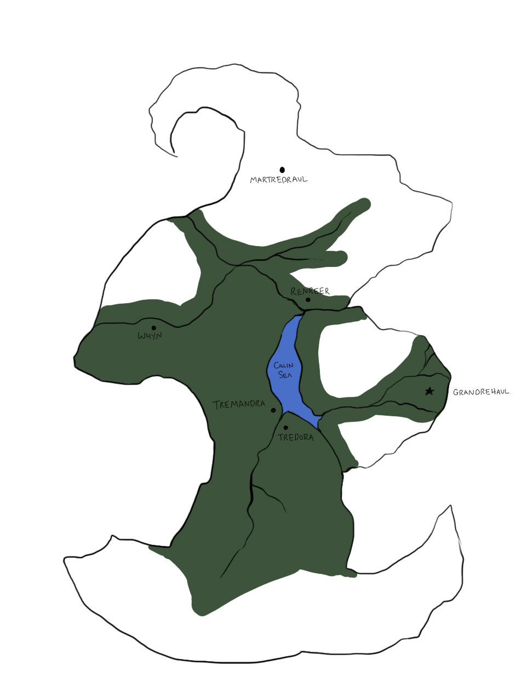

This is the homepage of my website for the worldbuilding of Martredraul, a story I am currently working on. Here you will find all of my unsorted ideas and navigation to other pages. This website will mainly serve as an organizational tool for me during the worldbuildling process. Hopefully this time, unlike all the others, I'll actually feel motivated to finish the process and not give up 100 pages in.
A taste of the Blaze:
The people move ever onward slowly, toiling. Their bones have already bleached beneath their skin, their joints have stiffened to the point of brittleness and crack with every force of movement. The skin itself is blistered and broken, crusted old leather stretched across muscles that are always achingly taunt. The Blaze leaves a burn like no other, a burn that goes deeper than the flesh of the body and sears itself into the mind. It imprints itself into the soul like the branding of a vengeful god, a god who wants nothing more than to smite down those who had utterly failed it. The Blaze presses onward, deeper, into every fiber of life. It melts futures and sears memories. It shapes the day to day, it shapes the society. It is life in the most extreme form, death in the most harsh. It gives mercilessly and takes mercilessly. We were not meant to survive it. We were not meant to survive the Blaze.- Unknown, 83 AB
They say that the element, Eldrium, was once whole. In the Great Collapse, it is said that Eldrium itself was crushed into thousands of pieces, then ground into the cliffs surrounding Karina’s Tempest. They say the element draws what it wants out of the possessor, the best the possessor has to offer, so Eldrium can recreate itself anew one day out of the best fragments we people have to offer. They say that the choice of purpose to sacrifice to the element is not really a choice, but Eldrium calling to each person and stealing away their most prized possession of self.
At it's most basic level, Martredraul is a story about a man at the beginning of a new world. The old Empire has been obliterated by a force called The Blaze.
There are two main components to the story of Martredraul and the Wanderer: The Father and Eldrium. Are they interconnected? What about the Blaze? Which is the catalyst? Is there a catalyst?
Martredraul. The Living City, the City of Gods. The home of the Father?
A very basic map (still needs a lot of details):
